Hi, I'm Andrew! I'm passionate about mechatronics and mechanical design. Feel free to look at some of the projects I've shown here!
Engineering Portfolio
Explore my engineering project work and professional experience across mechanical, electrical, and software disciplines.
Work Experience
Professional Experience
Tesla Fremont, CA
January 2026 – August 2026
Cell Metrology Systems Development Engineering Intern
Developed a centralized analytics platform tracking 18 critical parameters across four global sites and 10 production lines for system health monitoring and statistical process control.
Performed root-cause analysis and hands-on troubleshooting of inline metrology systems, resolving electromechanical failures involving motors, couplings, encoders, sensors, and cooling systems.
Built diagnostic software to verify sensor homing relative to production equipment, resolving failures responsible for up to eight hours of downtime.
Medtronic Minneapolis, MN
June 2025 – August 2025
Machine Vision Engineer Intern
Evaluated machine-vision inspection and process-monitoring feasibility for automated manufacturing using convolutional neural networks, achieving 97% classification accuracy in a study targeting $250,000 in annual savings.
Designed a modular line-scan testbench in SOLIDWORKS that reduced experimental setup time by 60%, using an XYZ gantry for rough positioning and rack-and-pinion adjustment for fine positioning.
Reviewed concepts with the team and helped define testbench criteria for sensor format, working distance, target resolution, and imaging adjustment.
Leadership & Engineering Experience
Gizmologists, University of Virginia Charlottesville, VA
April 2023 – Present
President
Designed and built the Feather Pen Clock, a gantry-based plotter that writes the time on pressure-sensitive boards using stepper motors and a servo-mounted feather pen with a rack-and-pinion mechanism; programmed its Arduino controller in C/C++.
Grew active club membership from 5 to 20 by recruiting, offering hands-on workshops, and creating multiple entry points for new member involvement.
Developing a motorized Smart Globe that uses drive-wheel motion and inverse kinematics to orient the globe toward selected countries.
Designed a custom 35:1 harmonic drive for a robotic arm, using a 70-tooth flexspline and 72-tooth circular spline.
Virginia Motorsports Formula SAE Team Charlottesville, VA
August 2024 – August 2025
Member, Cockpit and Controls
Implemented a Python thermodynamic model to estimate brake rotor temperatures over a simulated lap, including heat partition between rotors and pads and convection to ambient air.
Performed SOLIDWORKS finite element thermal-loading studies to assess rotor stresses across the temperature ranges identified by the model.
Gizmologists: A mechanical clock driven by a gantry and servo-mounted feather pen. This clock will writes the time on itself all day in the mechanical engineering building.
Full CAD Assembly
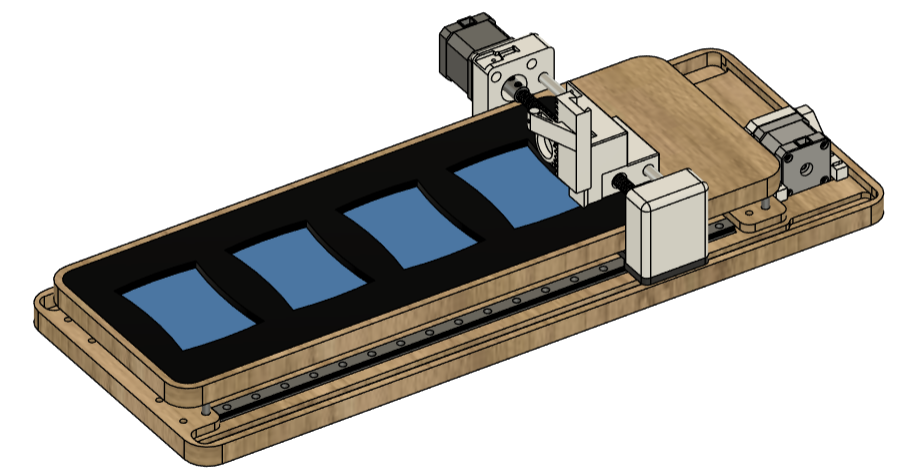
The Fusion 360 model shows the complete clock assembly. The video below demonstrates the gantry's homing sequence.
When turned on, the arduino nano initiates a calibration sequence that sets minimum and maximum x and y coordinates. The gantry moves until
it hits its limit switch in y and each of two limit switches in x. This is used to create planes in which numbers will be drawn.
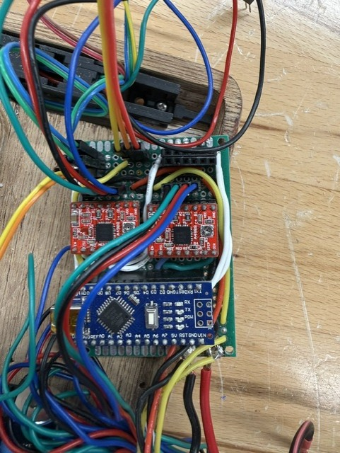
2 A4988 stepper motor drivers facilitate control of the longitudinal and lateral stepper motors. A LM7805 5V regulator takes in 12V from
a power supply and outputs 5V for arduino power and driver logic power. The 12V is used to power the stepper motors' coils. Limit switches are
connected to ground and use internal I/O pin pull-up resistors. The servo is controlled by a single arduino pin, as well as the LCD boogie boards
that the numbers are drawn on to.
During each change of minute, the clock erases one of the LCD boogie boards and writes in a new number.
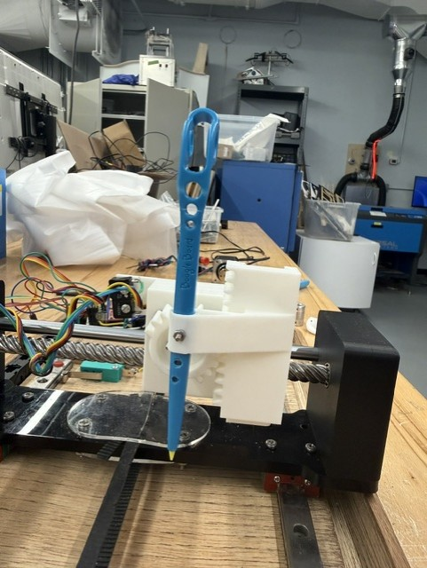
To resolve poor sustained contact between the pen and board caused by friction and pen flexion, a rack and pinion subassembly was designed to allow
the pen to be pressed down with force orthogonal to the board.
Shown above is the clock with the new rack and pinion pen subassembly transitioning from 11:59 AM to 12:00 PM.
Tools/Skills: Computer-aided design, servo control, stepper motor drivers, 3D printing, microcontroller programming, object-oriented programming
Smart Globe (In Progress)
Motorized globe project exploring how drive-wheel motion can control the orientation of a sphere. End goal is
to be able to say the name of a country and have the globe rotate to that country using Raspberry Pi speech to
text, coordinate lookup table, and inverse kinematics to turn to the desired orientation.
Globe CAD Assembly (In Progress)
Contact Geometry, Globe Motion, and Inverse Kinematics
The goal is to build a robotic arm that draws images with a light source using long-exposure photography. The harmonic drive is currently the only designed part of the arm. A cycloidal drive is also being considered as another high-reduction transmission option.
Harmonic Drive Exploded Assembly
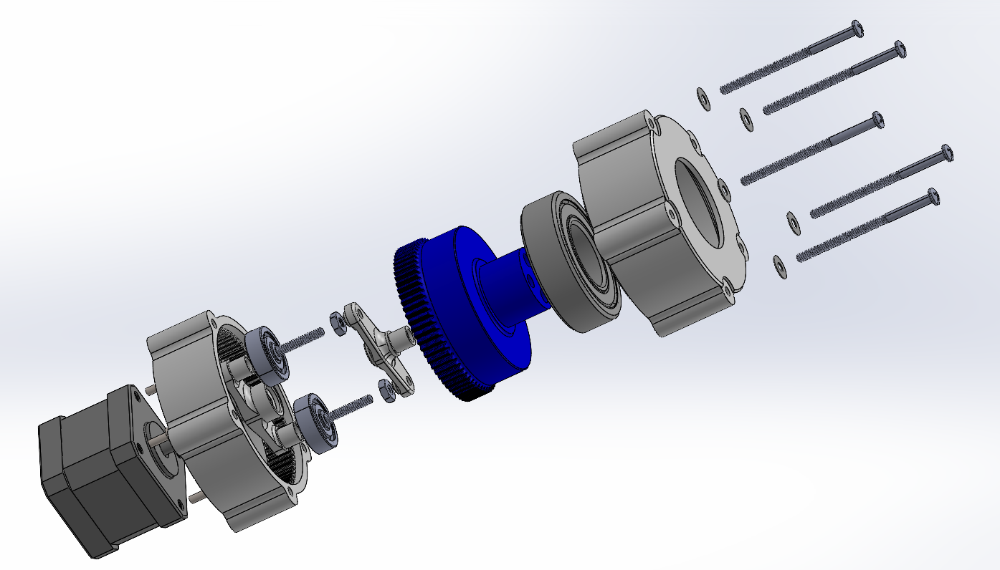
Flexspline and Circular Spline Cross-Section
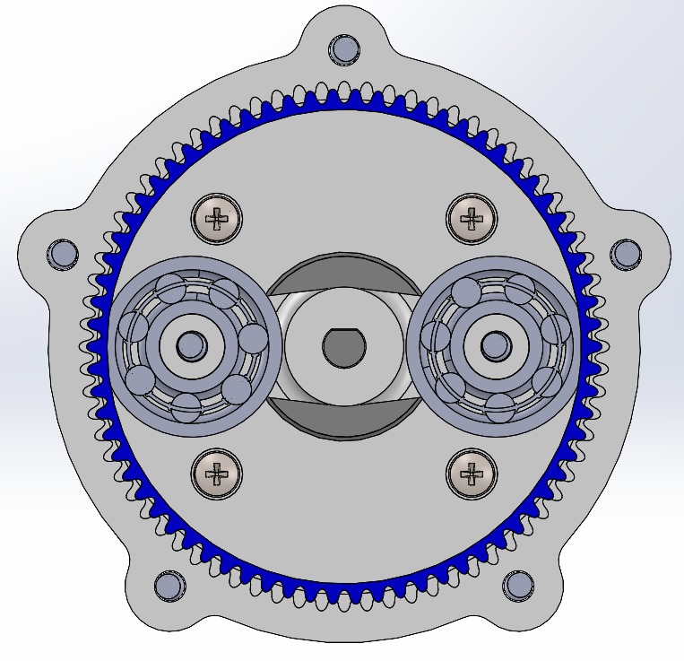
The wave generator's elliptical profile deforms the thin-walled flexspline, bringing its 70 teeth into engagement with the 72-tooth circular spline at two opposite regions. As the wave generator turns, these engagement regions travel around the splines, making the flexspline rotate slowly in the opposite direction. With the circular spline fixed and the flexspline as the output, the two-tooth difference gives a 35:1 reduction. Both splines use a module of 0.87.
Assembly Side Section
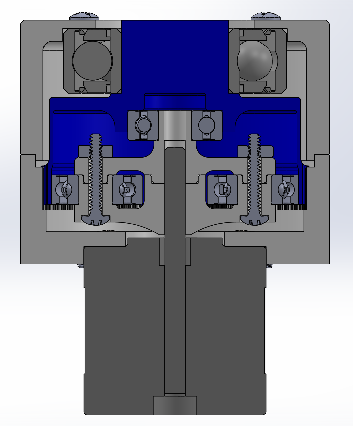
Harmonic Drive CAD Assembly
Wave Generator Test in Open Gearbox
This test shows the wave generator turning in the open gearbox without the flexspline, making its motion visible.
First Printed Harmonic Drive Test
Revised Bearing Fit
After revising the tolerances to improve the bearing fit, the printed drive was tested again.
Gizmologists: Designing a 32x32 LED display to display characters from the Mechatronics class video game project.
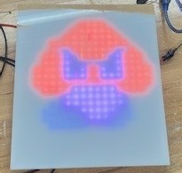
Shown sprite is a proof of concept with 16x16 LED array, and the acrylic sheet on top of the LED matrix diffuses the light to make the
color appear fuller. Four arrays are being used together to draw the 32x32 pixel sprites, with a frame of laser-cut acrylic and 3D printed material
holding the LED arrays together.
Sprite Display CAD Assembly, Front View
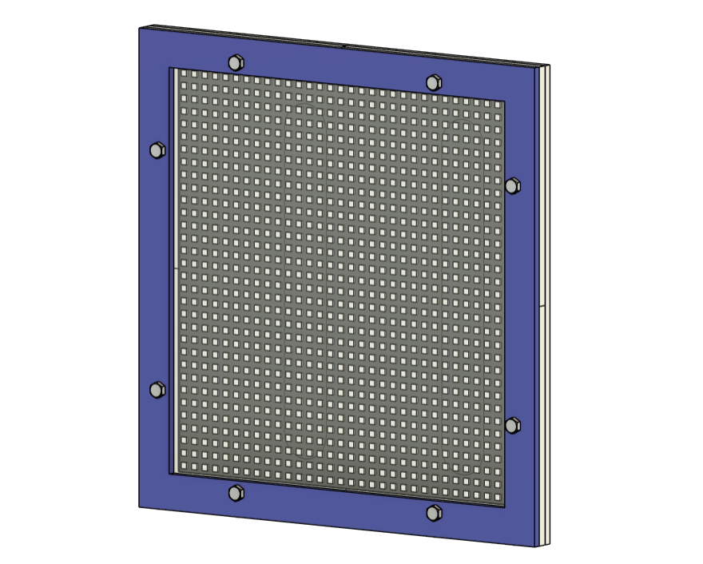
Assembled Display in Operation
Next Steps: Thermal Analysis and Management
The LEDs generate heat during extended operation. Thermal tape is currently being used to mitigate heat, but a more permanent solution is needed for long periods of use. Next steps are to analyze the display's thermal behavior and replace the acrylic backing with a water-jetted aluminum plate to improve heat management.
Tools/Skills: Arduino, C++, LED matrices, laser-cutting
Brake Rotor Analysis / Heat Model
Virginia Motorsports: Simulated rotor thermal behavior over simulated race lap using conduction, convection, and radiation models. Implemented in Python to compare transient heat transfer effects and maximum temperature experienced by different brake rotor geometries.
Thermal study in SOLIDWORKS:
Python Simulation Code Snippet:
This snippet calculates change in temperature with respect to time from heat energy loss due to conduction, convention, and radiation and heat energy added from braking power. Euler's method is applied to solve if this differential equation computationally to create the temperature over time graph shown below.
for i in range(len(brakes_table) - 1):
Qcond = (6 * k * w * t * (brakes_table.loc[i, 'front temperature per rotor'] - Tinf)) / L
Qconv = h * A * (brakes_table.loc[i, 'front temperature per rotor'] - Tinf)
Qrad = fv * fe * sig * A * ((brakes_table.loc[i, 'front temperature per rotor'])**4 - Tinf**4)
Tdot = (brakes_table.loc[i, 'front Q brake per rotor'] - Qcond - Qconv - Qrad) / (Cp * M)
brakes_table.loc[i,'Front Q conduction'] = Qcond
brakes_table.loc[i,'front Q convection'] = Qconv
brakes_table.loc[i,'front Q radiation'] = Qrad
brakes_table.loc[i,'front Tdot'] = Tdot
# Euler's method to assign temperature to next time step
brakes_table.loc[i + 1, 'front temperature per rotor'] = (
brakes_table.loc[i, 'front temperature per rotor'] +
Tdot * (brakes_table["elapsedTime"].iloc[i + 1] - brakes_table["elapsedTime"].iloc[i])
)
An interactive game built with wood and PLA and programmed into an arduino uno. Designed to test player reaction time and advertise the Gizmologists to students on grounds during outreach events.
Tools/Skills: microcontroller programming, circuits, 3D printing, computer-aided design, woodworking
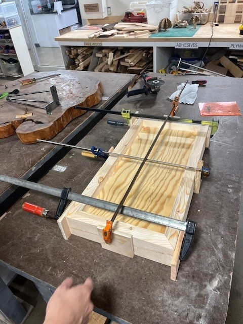
Used miter saw, jointer, and planer to build frame to hold the buttons.
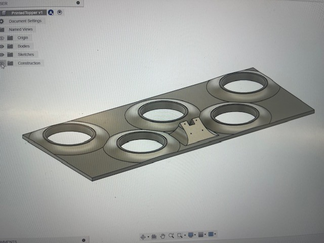
Designed 3D printed topper to be overlayed on the wooden frame. Includes sockets for inserting buttons and mount for OLED display. This topper was 3D printed in three sections and fitted together on top of a plywood layer.
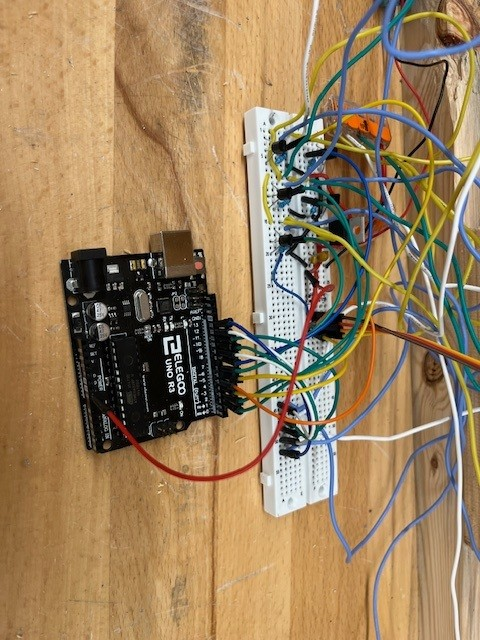
Used 2n3904 npn transistors to sink sufficient power through the LEDs inbuilt into the buttons and programmed a standard whack-a-mole game into the arduino.
A second iteration of this will be build on a perf-board with a darlington transistor array IC and raspberry pi for more complex games.
Celtic Autoharp Guitar
Work-in-progress guitar designed to resemble a celtic harp while merging the concept of an "autoharp". The user will be able to press a button
to automatically finger a chord using solenoids that mute the strings not being played.
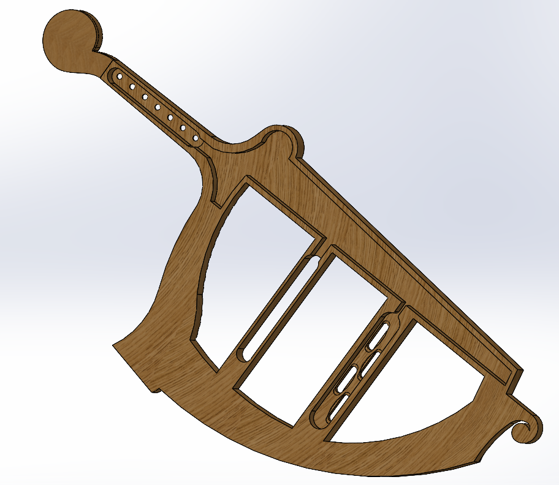
Back of the guitar includes channeling for wires to pickups and solenoids. This will all be CNC milled out of marine-grade plywood.
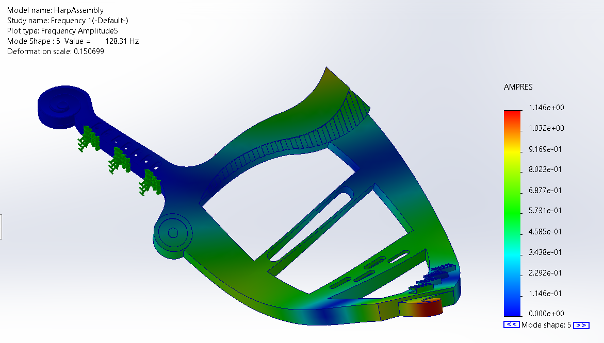
Finite element analysis in SOLIDWORKS to determine resonant frequencies of design. Used to make edits to design to achieve resonant frequencies
of common notes played on the guitar.
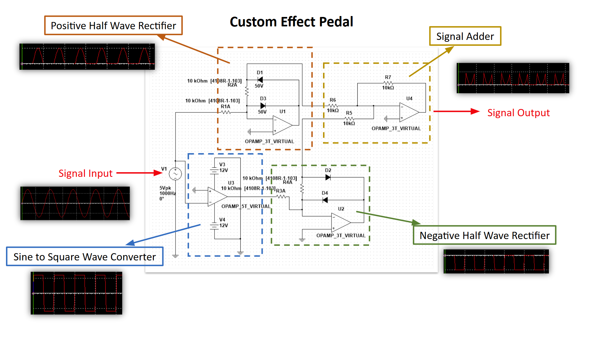
Custom FX pedal to process signal from guitar pickup. Sinusoidal signal goes through a half wave rectifier one one side and
sine-to-square wave conversion on the other. Square wave goes through a negative rectifier, then both signals are added in a
summing amplifier. Resulting sound is between a sine wave and square wave.
Tools/Skills: Analog circuits, computer-aided design, finite element analysis
Quantitative Pronator Drift Test
Biomedical Engineering Design Project: Designed a device to quantify the pronator drift test. Focused on accuracy and usability in clinical settings.
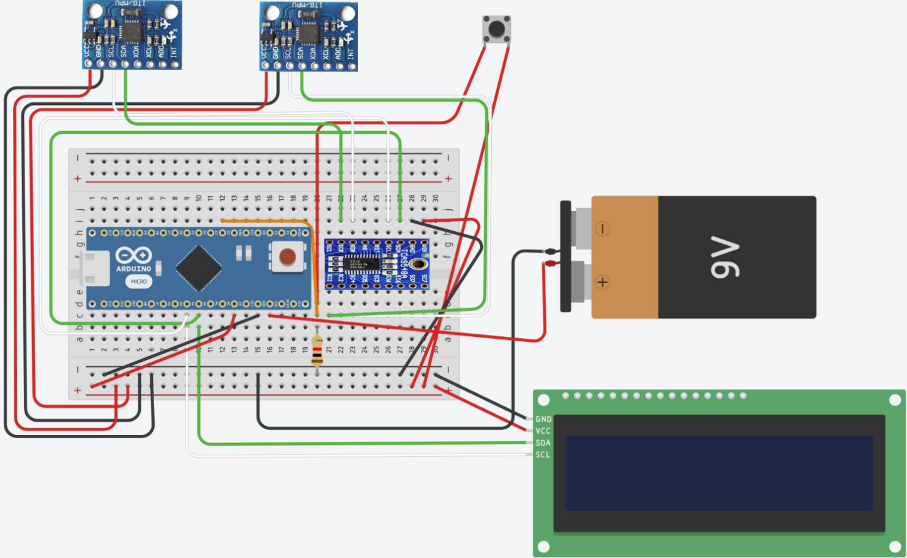
In this project, I developed working knowledge of inter-integrated circuit communication protocol and implemented it to extract information from two MPU-6050 6-axis accelerometers. This required using a TCA9548A i2c multiplexer to selectively read off of each accelerometer due to them having the same i2c address.
Arduino Sensor Processing Code Snippet:
This portion of the code reads data from two MPU-6050 accelerometers through an I2C multiplexer,
calculates the angular displacement of each arm, and displays the drift in degrees on an LCD.
Gizmologists: Work-in-progress mechanized chessboard with automated piece movement. The central carriage carrying the electromagnet is driven by a dual-timing belt core XY mechanism
and two stepper motors. The electromagnet can turn on to drag chess pieces with embedded magnets from underneath the board. Intended sensing mechanism is a reed switch
on each square that would close when a piece is placed on top of it. All pieces can be stored in an array so that an AI opponent can tell where all pieces are
at all times and can initiate movements of pieces while interpretting human player's moves.